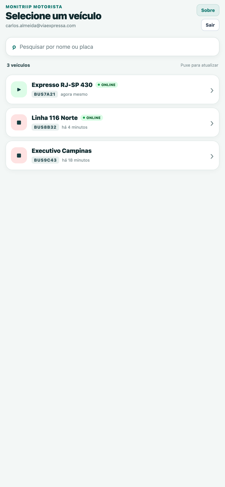

Registro de viagens para motoristas de ônibus
Inicie a viagem, deixe o GPS trabalhar em segundo plano e registre embarques e ocorrências, mesmo sem conexão.
O app ainda não aparece na busca da App Store. Use sempre o botão acima para instalar no iOS.


GPS em segundo plano
Rastreamento contínuo durante a viagem, com o celular bloqueado.
Funciona offline
As posições ficam em fila e são enviadas quando a conexão volta.
Embarques e ocorrências
Registre passageiros e eventos operacionais durante o trajeto.
Exportação
Exporte os dados da viagem em JSON para conferência ou integração.